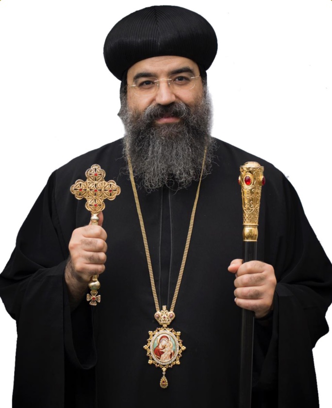
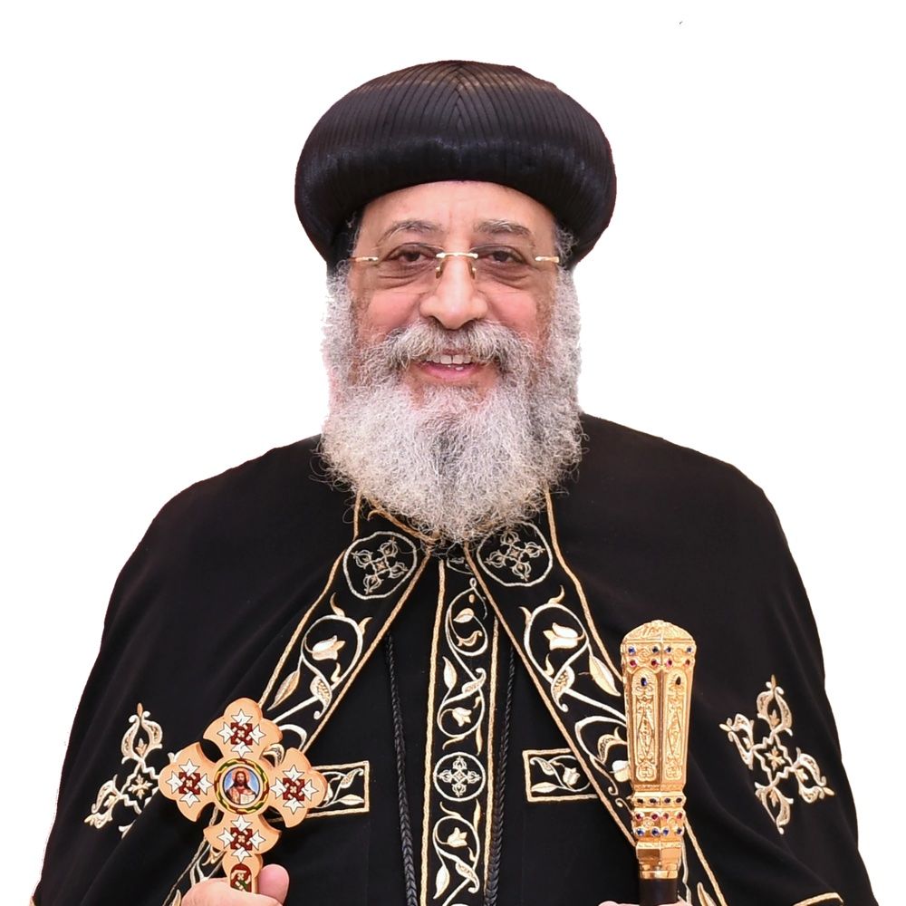

Salvation through Christ
We proclaim Jesus Christ, the incarnate Son of God, who died and rose for the life of the world.
St. Mary was founded in 2020 to serve the Washington D.C. metropolitan area, carrying forward a faith first preached in Alexandria by St. Mark the Apostle.
In 2020, St. Mary Coptic Orthodox Church of Washington D.C. was established to serve Coptic Orthodox families and all who seek Christ across the capital region.
From our home at 5910 Goldsboro Road in Bethesda, we gather for the Divine Liturgy, raise our children in the faith, study the Scriptures, and serve our neighbors. What began as a small community has grown into a parish family.
Our patron is St. Mary, the Theotokos, the Mother of God, whom the Coptic Church honors above all saints and whose Holy Family once found refuge in Egypt.
“…to do justly, to love mercy, and to walk humbly with your God.”Micah 6:8 · Our parish verse
We proclaim Jesus Christ, the incarnate Son of God, who died and rose for the life of the world.
Love for God is shown in love for one another, in our parish and far beyond it.
Following the One who came “not to be served, but to serve,” every member has a place to give.
We openly welcome people of every race and nationality into the life of the Church.

Fr. Domadious has served St. Mary since August 2020, shepherding the parish from its very first days.
Ordained to the priesthood in 1999, Fr. Domadious has served Coptic communities on three continents, in Giza, Egypt; in Amsterdam, the Netherlands; and in Virginia, before coming to St. Mary.
Before his ordination he earned a medical degree from Cairo University, and he brings a physician’s care to his pastoral ministry of confession, counsel, and visiting the sick.
St. Mary is a parish of the Coptic Orthodox Diocese of Pennsylvania, Delaware, Maryland, West Virginia and its territories.

His Grace shepherds the parishes of the diocese, which serves Coptic Orthodox communities across Pennsylvania, Delaware, Maryland, West Virginia and its territories.

Pope of Alexandria and Patriarch of the See of St. Mark, and the 118th successor of St. Mark the Apostle, leading the Coptic Orthodox Church throughout the world.
Two thousand years of faith, handed down from generation to generation.
St. Mark the Apostle preaches the Gospel in Alexandria. His first convert, the shoemaker Anianus, becomes the city’s bishop after him.
St. Mark is martyred in Alexandria. The Church he founded becomes the See of St. Mark.
The Catechetical School of Alexandria becomes a great center of Christian learning, forming teachers such as Clement and Origen.
Under Emperor Diocletian, countless Egyptian Christians are martyred. The Coptic calendar counts its years from this time (Anno Martyrum).
St. Anthony the Great goes out into the Egyptian desert, and St. Pachomius founds communal monasteries, a way of life that spreads worldwide.
St. Athanasius of Alexandria defends the full divinity of Christ. The Nicene Creed is still prayed in every Liturgy.
At the Council of Ephesus, led by St. Cyril of Alexandria, the Church confirms that St. Mary is rightly called Theotokos, the Mother of God.
Coptic immigrants establish the first churches in North America, and parishes multiply across the United States.
H.H. Pope Tawadros II is enthroned as the 118th Pope of Alexandria and Patriarch of the See of St. Mark.
St. Mary Coptic Orthodox Church is founded in Bethesda to serve the capital region, with Fr. Domadious serving from August 2020.
Use the arrows, swipe, or scroll sideways to travel through time.